Syntax is shape; semantics is behavior
An abstract syntax tree (AST) represents the structure of a program independently of surface punctuation. A grammar says which trees exist. A semantics says which results those trees produce. A syntactically valid program may still have undefined behavior in the language’s semantics.
This original tiny language contains only integers, names, addition, and local binding:
type expr =
| Number of int
| Name of string
| Plus of expr * expr
| Bind of string * expr * expr
The host language is OCaml. Number, Plus, and Bind are constructors representing the object language. The OCaml integer in Number 7 is the representation of an object-language literal.
An environment gives names meaning
Write ρ ⊢ e ⇓ v as: “under runtime environment ρ, expression e evaluates to value v.” The course often writes ⇒ for the same big-step evaluation relation. An environment is a mapping from names to values. An association list implements it if lookup returns the first matching name.
let rec lookup x = function
| [] -> failwith ("unbound name: " ^ x)
| (y, v) :: rest -> if x = y then v else lookup x rest
let rec evaluate env = function
| Number n -> n
| Name x -> lookup x env
| Plus (a, b) ->
let va = evaluate env a in
let vb = evaluate env b in
va + vb
| Bind (x, definition, body) ->
let value = evaluate env definition in
evaluate ((x, value) :: env) body
This pedagogical evaluator has only integer values and uses Failure for missing names. The homework language has tagged values and requires UndefinedSemantics; preserve that distinction when adapting the idea.
Derive the binding case
For let x = e1 in e2, the binding rule has two premises: evaluate the definition in the old environment, then evaluate the body in an extended environment. The new name is not in scope inside its own ordinary let definition.

View Mermaid source
flowchart TD
accTitle: A step-by-step reasoning flow
accDescr: Each arrow passes the result of one reasoning step to the next.
N0["Evaluate e1 in ρ<br/>The old scope determines the definition’s<br/>meaning."]
N1["Extend with x ↦ v1<br/>Place the newest binding before older<br/>bindings."]
N0 --> N1
N2["Evaluate e2 in the extension<br/>Lookups now see the new x."]
N1 --> N2
N3["Return the body’s value<br/>Outer scopes remain available to their own<br/>computations."]
N2 --> N3
Consider this object-language expression:
let x = 4 in
let x = x + 3 in
x + 2
The second definition sees the old x = 4, so it produces 7. Its body sees x = 7 and returns 9. Evaluating the definition in the extended environment would either create an accidental recursive binding or require a value that does not exist yet.
Premises become recursive calls
| Rule element | Interpreter counterpart |
|---|---|
| Literal conclusion | Wrap or return the literal value |
| A variable premise using ρ(x) | Environment lookup |
| Evaluation premise for a child | Recursive call on that child |
| Side condition such as a nonzero divisor | Explicit guard |
| Different rule for true and false | Pattern match on the condition value |
| No rule applies | Raise the specified undefined-semantics exception |
For a conditional, evaluate only the selected branch. If if true then 8 else (1 / 0) is allowed by the object language, it evaluates to 8; eagerly evaluating all three children would be an interpreter bug. Evaluation order is part of the language definition. Use sequential let bindings in OCaml to make required order explicit rather than relying on the host’s argument-evaluation order.
The homework connection
HW1 P12 already asks for a small interpreter, without an environment. P14 adds a changing interpretation of X. HW2 extends the same pattern with runtime environments, tagged values, lists, and procedures.
Check your understanding
How can an expression be a valid AST but have no evaluation derivation?
Reveal the reasoning
The grammar can allow a division node whose divisor evaluates to zero, or an addition node whose child produces a boolean. The node is syntactically valid, but the relevant semantic side condition or value shape fails. Syntax recognition and semantic validity are different questions.
Read alongside: lecture 5, pp. 8–12 and 19–24, English book, chapter 3.